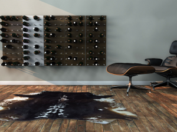
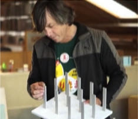
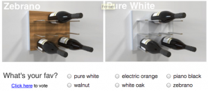

![[Interview] STACT: how to raise money and awareness via crowdfunding?](wp-content/uploads/2013/01/JamieKasza-LinkedIN.jpg)
STACT is a Vancouver-based project who get funded via Kickstarter and was ranked among the most successful Canadian campaign in 2012.
We are proud to have interviewed Jamie, founder of STACT.
Seeding Factory : Hello Jamie, as an introduction could you quickly present STACT?
{kind=link}
Jamie Kasza: Hello my name is Jamie Kasza and I founded STACT in July 2012, in Vancouver. My background is in e-commerce, with over 8 years of experience with Best Buy Canada. As a wine enthusiast, I saw a need for a better way to store and display wine. With a global online wine industry expected to grow by 63%, it’s expected to over take even the music downloads space. This is why I decided to commission a designer, Eric Pfeiffer (ICFF award-winning designer from San Francisco), to help me create the revolutionary STACT modular wine wall system.
S.F. : Nice story! And why did you decide to go KickStarter ?
Once we had the design finalized, patent application submitted, and established manufacturing plans, I turned to Kickstarter to finance expenses involved with manufacturing the product, which include tooling and material costs. I hadn’t considered other options to raise capital, as I felt there was a market for the product that Kickstarter was my best option.
S.F. : It seems your were right. Could you detail how you prepared and managed the campaign?
I chose a modest funding goal of $20,000. Having fronted the finances to fund the production design and development, prototypes, patent applications and other various startup costs, I had already placed my bets and was determined to see bring STACT to market regardless of the response on Kickstarter.
During the weeks leading up to the launch I sought help from a number of talented individuals, who helped me create the computer generated product rendered images and animation, photography and video production, scripts, original music, website design and development, PR, etc.
A day prior to the launch I issued a press release, and reached out to key influencers and bloggers with a press kit.
“One important thing was to have the right people supporting me. You can’t do it on your own!”
J. Kasza
S.F. : Honestly you’ve done a very good job to hit more than 5 times your initial goal ($108,000). Who helped you to prepare and market this campaign ? Did you outsource some of the work.
A good friend of mine, Graham Williams, a producer at a leading digital media agency here in Vancouver was my right hand man, right from the initial planning stage of the campaign. He wrote the script, and traveled with me to San Francisco to shoot the video with Eric Pfeiffer my product designer. He also hooked me up with some amazing talented professionals who helped with everything from the stunningly realistic computer generated images and animation, to original music production and video editing and post production – all world-class caliber work on a bootstrap budget. Yes it can be done!
Another friend, Wayne Lloyd, worked closely with me on devising my PR plan, from identifying a list of key influencers and bloggers to target, and tracking down their contacts, to crafting the message that would ultimately convince them to sink their teeth into the story. Once the campaign started my focus shifted to managing the PR and social media.
S.F. : Wow! You had the chance to know talented people to help you out! It’s exactly the same support that we offer via Seeding Factory and it’s terrific you found it among your friends.
{kind=link}
To go deeper into your campaign, can you portray briefly the type of people who backed your product?
The typical backer profile that you will find on Kickstarter tends to be a male in their early to mid twenties, looking for that cool new $50 gizmo that will make their iPhone do something amazing. A target different than ours. So it was no surprise that 50% of our backers were first time Kickstarter backers, they were more affluent, and in a place in their life where they were interested in home décor enhancements… oh yeah, and the occasional glass of red wine.
S.F.: In fact it looks like you worked hard on the marketing side of the campaign, is it right?
Yes we did. Because in addition to bring new backers, we knew that we had to tap into the conventional Kickstarter customer base. So we tweaked our positioning and message to speak more directly to this crowd – Our message went from “Wine Storage Beautified” to “Bringing Sexy Back to Wine Lovers.” And it worked, garnering support from the leading blog sites – Uncrate, Complex Magazine, the Awesomer to name a few. In fact Uncrate became by far our top referral site in terms of number of orders.
“We tweaked our positioning and message to speak more directly to the Kickstarter crowd”
J. Kasza
S.F. : In retrospect what was your best assets for running this successful campaign ? What will you do differently ?
Our first assest was definitively the product. By extensively surveying the market we had confidence that the product was commercially viable. The second most important thing was to have the right people supporting me. You can’t do it on your own!
The main critic, I would say, is that I should have put more effort into Facebook from the start of the campaign.
S.F. : One original things you’ve included in your campaign was that poll. How successful was it ?
{kind=link}
The poll was beneficial as it allowed backers to determine which limited edition color we would put into production. The majority of backers participated in the poll, and many provided comments and suggestions as well. A second poll also allowed me to get an idea of what the color mix would be so I could place a factory order in advance.
S.F. : In addition to this poll do you have the example of a feedback/suggestion/comment that was so relevant that you instantly took it into consideration and applied it.
I had a local backer asked if he could pick his order up to save the shipping cost. I implemented a solution to accommodate this, as it will not only result in a cost savings but also a unique opportunity to have direct interaction with my valued backers. Not to mention, the chance to offer an upgrade.
S.F. : To conclude, do you have any comment about the Crowdfunding experience ?
It was a once in a lifetime experience that allowed me to share my passions of wine, design and ecommerce with an amazing community of supporters. Based on their overwhelming response I was able to gain the confidence needed to leave my day job and pursue STACT full time.
Pingback: Why Crowdfunding Will Boost Your Product Launch [Infographic] | Crowdfunding News()